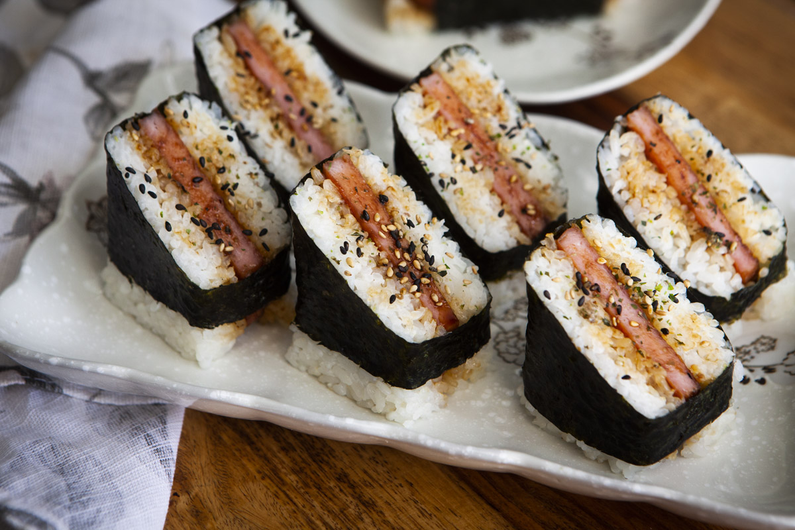

Spam Musubi

Description
Who knew a mystery meat from a can could be so elegant? The spam musubi quite literally wraps
comfort with decadence, in this salty, sweet, and rich dish. Forget GROSS egg finger sandwiches.
The spam musubi is the only finger food you will need for the rest of your life.
Ingredients
- 12 ounces SPAM
- 1/4 cup oyster sauce
- 1/4 cup tamari
- 1/2 cup sugar
- Nori roasted seaweed (cut into halves or thirds)
- 6 cups cooked sushi rice
It's Cookin' Time
- Combine oyster sauce, tamari, and sugar in a plastic bag until the sugar is dissolved.
- Slice SPAM into 8-10 slices and add to the marinade in the plastic bag. Allow to sit for at least 15 minutes.
(Save the can the SPAM comes in to use as a mold for later)
- Drain the marinade off and save in a bowl. (if you don't save the marinade it's fine just don't expect
the flavor to be absoulutely BUSTING)
- Heat a pan over medium-high heat. Fry SPAM on each side until chripssssy. Before flipping baste SPAM with left over
marinade.
- After the SPAM is done cooking baste one more time with left over marinade.
- Place a strip of nori onto a cutting board (shiny side down!)
- Line the musubi mold with seran wrap and firmly press 1.5 inches of sushi rice into the mold.
- Remove the rice from the mold and place in the middle of the nori. Add a slice of SPAM atop the beautifully
formed rice.
- Fold one end of the nori onto the SPAM. Next, fold the other half over and bind the nori togehter
using water on your fingers.
- Now dip that bad boi into some sriracha and yell in pure extasy!
Return to Recipes Page